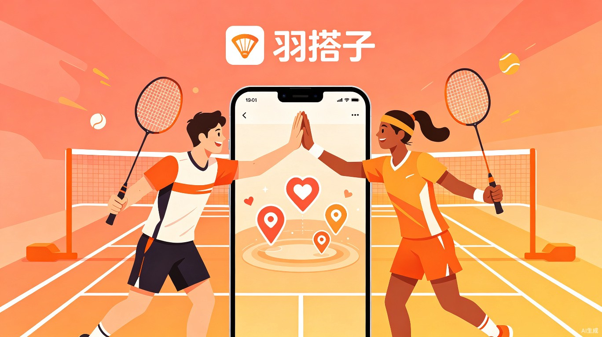

羽毛球同城找搭子 · 打球配对 · 球馆找队友
让每一拍都不孤单，让每一场都有队友
Contents · 目录
2.5亿运动人口，巨大的供需缺口
三类核心用户，三种匹配需求
智能匹配、一键组局、球场社交
多元变现路径与冷启动方案
Part 01
2.5亿人打球，但找不到一个合拍的搭子
Market · 市场规模
运动人口
全国参与人数
产业规模
2025年预测
球馆数量
年增长6.8%
社群缺口
理论500亿 vs 实际<200亿
Pain Points · 用户痛点
Part 02
三类核心用户，三种不同的配对需求
Personas · 三类核心用户
占比45% · 25-35岁白领
刚开始学球，想找到友好的打球环境，需要新手引导和入门培训，怕被高手嫌弃"融不进圈子"。
占比40% · 25-45岁中产
有一定水平，希望找到实力相当的固定搭档，追求高质量的对抗体验，通过打球拓展社交圈。
占比15% · 深度爱好者
追求专业对抗环境和赛事机会，愿意为高质量比赛和数据分析支付溢价，有明确轮转规则意识。
Demographics · 用户画像数据
主力人群：25-44岁城市中产，本科以上占73.6%，月均可支配收入超1.2万元。
性别趋势：女性参与率提升至42%，"她经济"消费增长显著。
运动频率：68.3%每周打球2次以上，平均每周1.8次。
消费升级：人均年消费从300元跃升至近3000元。
Part 03
智能匹配 + 一键组局 + 球场社交，三位一体
Core Features · 六大核心功能
按水平等级+空闲时间+性格标签+地理位置四维匹配，新手不会被打爆，高手不会被拖累
发起/加入AA局、主题局、陪练局，自动计算费用分摊，到场签到自动扣款
实时查看附近球馆空闲时段、价格对比、在线订场，找到搭子后直接预订
赛后互评、行为积分、等级认证，防放鸽子机制，高信誉用户享免押金
月度排名赛、同城对抗赛、企业团建赛，自动生成赛程、积分榜和对阵图
动态分享、约球圈、技术讨论区，KOL内容种草+UGC社区，搭建羽毛球社交圈
User Flow · 用户核心路径
填写水平、时间、位置
AI推荐合适球友
选时间场地确认
到馆签到打球
进阶路径：从陌生到固定搭档
通过智能匹配参加附近球局，认识5-10个新球友
找到2-3个水平合拍的时间搭子，开始固定约球
配对成功固定双打搭档，参加排名赛建立战斗友谊
加入主理人俱乐部，成为社群核心成员
Part 04
不止赚场地费，构建多元收入飞轮
Business Model · 五大收入引擎
球馆端SaaS服务费+订单佣金，线上预约占比68%且持续提升
入门班800-1200元，进阶班1500-2000元，私教200-400元/h，毛利率60-75%
球拍、球鞋、球服团购返佣，毛利率30-50%，自定义球拍可贡献年收入25%
排名赛/城市对抗赛报名费+品牌赞助，参赛用户后续月均消费增长200%
运动保险、健身康复、健康食品等跨界合作，每增加一个品牌人均年消费提升8-12%
具备3种以上收入来源的俱乐部，主理人月收入可达1.5-3万元，经济波动期流失率比单一模式低60%
Growth · 冷启动与增长路径
选1-2个羽毛球氛围城市（广州、成都），入驻核心球馆，主理人邀请制冷启动，目标积累5000+活跃用户
城市试点复制到10个一二线城市，启动赛事IP+培训体系，小红书/抖音内容种草，目标月活50万+
内容驱动全国50+城市覆盖，搭建主理人赋能平台，开放品牌合作和装备电商，构建羽毛球社交生态
生态闭环内容种草→用户涌入→数据积累→匹配更准→体验更好→口碑传播→更多用户，形成正向循环
核心驱动力让每一拍都不孤单，让每一场都有队友
2.5亿羽毛球爱好者的社交新方式